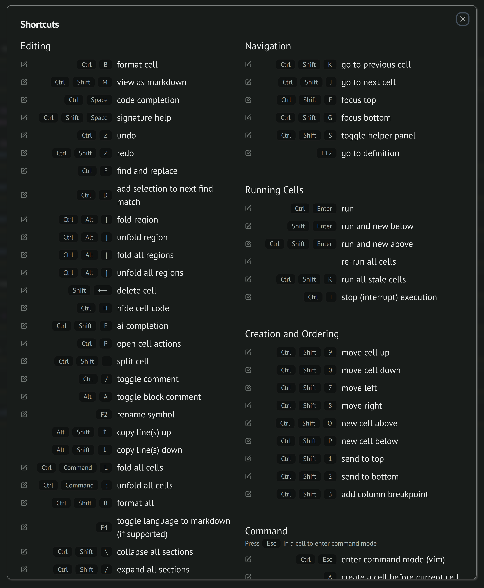
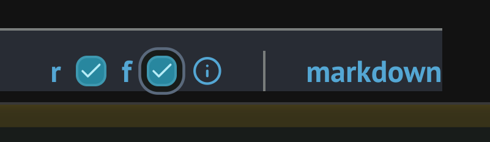

The next generation of Python notebooks
Content from the webinar slides for easier browsing.
Notes
- I am making an opinionated decision to use uv for installation.
- Notebooks are great for prototyping but not at scale.
marimois not available on the Alliance clusters at this point.
A new notebook
What’s wrong with Jupyter?
Jupyter notebooks are very popular but they come with downsides:
- Version control nightmare.
- Awkward JSON file format.
- Reproducibility issues.
DAG dataflow
marimo notebooks automatically generate an intermediate representation (IR) in the form of a directed acyclic graph (DAG) of:
- definitions (
defs) of global variables, - references (
refs) of global variables.
Each cell is parsed into an abstract syntax tree (AST).
Statically inferred (no runtime tracing).
Python files
Notebooks are saved as .py files.
Each cell is stored as a function.
Pure functions can be reused as modules.
➔
Easy version control.
Directly executable as scripts or web apps.
Readable in text editors.
Interactive elements
marimo.ui creates interactive user interface (UI) elements with first-class support.
Notebooks are automatically updated when values are changed via interactions.
Cool features
- Turn notebooks into apps.
- Integrated AI.
- Docstrings on hover.
The constraints
All this comes at the cost of some constraints:
- Global variables must be unique.
- In-place transformations are not allowed.
- Mutations and attributes are not tracked.
All this is good practice for strict functional programming (and JAX)!
Computation cost
There is a cost to updating the DAG at each change.
Runtime configurations and cell settings allow to control when re-runs happen.
Getting started
Installation
Create a uv project:
uv init --bareInstall marimo in it as a development dependency:
uv add --dev marimo(Optional) add tools marimo can make use of:
uv add --dev ruff basedpyright mcpLaunch a notebook
marimo edit notebook.pyIf you installed with uv, first activate the virtual env or run instead:
uv run marimo edit notebook.pyConfiguration
Via GUI
 top right corner (Notebook settings) ➔ User settings
top right corner (Notebook settings) ➔ User settings
Package manager
➔ User settings ➔ Packages & Data ➔ Package Management ➔ Manager: uv
AI pair programming
Code completion
Use GitHub Copilot without account.
AI assistant
Use any of the classic LLMs with API key.
MCP servers
marimodocs- Context7
User settings are saved in ~/.config/marimo/marimo.toml (or similar in different OS).
[mcp]
presets = ["marimo", "context7"]
[mcp.mcpServers]
[runtime]
watcher_on_save = "lazy"
auto_reload = "off"
default_sql_output = "auto"
auto_instantiate = true
std_stream_max_bytes = 1000000
default_auto_download = []
on_cell_change = "autorun"
output_max_bytes = 8000000
reactive_tests = true
[formatting]
line_length = 79
[completion]
copilot = "github"
activate_on_typing = true
[snippets]
custom_paths = []
include_default_snippets = true
[keymap]
preset = "default"
destructive_delete = trueLogs are found at ~/.cache/marimo/logs (or similar).
Official website
Excellent documentation:
Tutorials
marimo tutorial introFor more tutorials, replace intro with any of:
dataflow
ui
markdown
plots
sql
layout
fileformat
markdown-format
for-jupyter-users
If you installed with uv, first activate the virtual env or run instead:
uv run marimo tutorial introKey bindings
Vim kbd available.
Command mode
Esc
With vim keybindings are enabled or other issues, use Ctrl+Esc or Shift+Esc instead.
Navigation between cells, copy/cut/paste cells.
Edit mode
Enter or click on a cell.
Edit content.
Customizable. List displayed by Ctrl-Shift-h.

ipynb notebooks conversion
marimo convert notebook.ipynb -o notebook.pyIPython magics are replaced by Python functions.
After a uv install, run (or activate the virtual env):
uv run marimo convert notebook.ipynb -o notebook.pyGeneral Usage
Installing Python packages
Directly in the notebook following a pop-up when trying to use uninstalled package.
Of course this can also be done via the command line:
uv add <package>Example:
uv add numpyOutputs displays
Console outputs
Text written to stdout/stderr
➔ displayed below cells by default,
➔ hidden in app mode.
Example:
cell
print("This is a console output.")Cell outputs
➔ displayed above cells by default,
➔ shown in app mode.
Example:
cell
"This is a cell output."Forbidden re-assignments
Variables re-assignments are OK within cells, but not across cells.
The cells with re-assignments will not run.
Reusing i in loops across cells won’t work.
+=, -=, etc. won’t run.
Solutions
Use cell local variables
Variables prefixed with _ are cell local.
(names can thus be reused between cells).
cell 0
_a = 3
print(_a)cell 1
print(_a)name '_a' is not defined_i can be reused between cells:
cell
for _i in range(10):
print(_i)or
Wrap in functions
Functions create local environments.
Variables created in functions don’t enter the global environment.
➔ their names can be reused in functions in different cells.
cell
def _():
for i in range(10):
print(i)
_()Mutations do not call re-runs
Let’s consider:
cell 0
l = [1, 2, 3]cell 1
len(l)cell 2
l.append(4)running the cell 2 will not update cell 1.
Solutions
Mutate variables in the cells in which they are defined:
cell 0
l = [1, 2, 3]
l.append(4)cell 1
len(l)or
Create new variables:
cell 0
l = [1, 2, 3]cell 1
len(l)cell 2
l2 = l + [4]cell 3
len(l2)Deleting cells
Automatically deletes variables defined in them (and cells with refs to them are re-run).
No cycles permitted
This would make the DAG impossible:
cell 0
var1 = 4
print(var2)cell 1
var2 = 7
print(var1)Attributes are not tracked
Assignments to attributes aren’t tracked:
cell 0
class Object(object):
pass
obj = Object()
obj.somefield = "somevalue"cell 1
print(obj.somefield)cell 2
obj.somefield = "newvalue"cell 1 is not re-run and updated automatically.
Dataflow programming
Execution order \(\neq\) cell order.
The execution order is determined by the DAG.
This is a totally valid notebook:
cell 0
print(new_var)cell 1
new_var = 8These are perfectly equivalent notebooks (they have the same DAG):
cell 0
a = 3cell 1
a1 = 8.9
a2 = 8.3cell 2
a3 = 3.0cell 3
a4 = 1.2cell 4
my_list = [a1, a2, a3, a4]cell 0
my_list = [a1, a2, a3, a4]cell 1
a = 3cell 2
a3 = 3.0cell 3
a1 = 8.9
a2 = 8.3cell 4
a4 = 1.2Managing runs
Re-running heavy computations to update the notebooks can be costly.
This can be controlled by disabling/enabling:
- autorun on startup,
- autorun on cell change (lazy execution),
- specific cells.
Markdown
You can turn cells into markdown and select raw strings and/or f-string.

at the bottom right corner of every cell.
Markdown extensions
cell
/// details | Click for details.
You can create accordion blocks.
///cell
/// admonition | Tips
You can create info blocks.
///cell
/// attention | Be careful!
You can create warning blocks.
///Plots
Plotting works as you would expect.
JavaScript interactivity also works.
cell
import plotly.express as px
df = px.data.tips()
fig = px.density_contour(df, x="total_bill", y="tip")
fig.update_traces(contours_coloring="fill", contours_showlabels = True)
fig.show()Script
You can run a notebook as a script, without having to do any conversion, with:
python notebook.pyApps
You can run a notebook as an app with:
marimo run notebook.pyAI
Completion
Provided out of the box with GitHub Copilot. Tab to complete.
Generate cells with AI
Box at the bottom of notebook.
Cells refactoring
In the menu of each cell.
Chat
Button on the left menu opens a chat panel.
Going crazy
marimo new asks an LLM to generate a full notebook from scratch:
Example:
marimo new "Create a cool-looking 3D plot with matplotlib."Interactive UI
The marimo module
Every notebook loads the marimo module automatically.
Interactive elements make use of the module, so it is convenient to create an alias:
cell 0
import marimo as moCreate an interactive element
You create an element with one of the mo.ui methods.
Call it at the end of the cell to display it:
cell 1
slider = mo.ui.slider(start=1, stop=10, step=1)
sliderUI elements are defs.
You can embed it in a markdown output and format it with an f-string:
cell 1
slider = mo.ui.slider(start=1, stop=10, step=1)
mo.md(f"Pick a value: {slider}")Access the value
You then need to access its value in another cell:
cell 2
slider.valueWhich you can also embed in some markdown:
cell 2
mo.md(f"You picked the value: {slider.value}")Example
Create a date selector element:
cell 0
date = mo.ui.date()
mo.md(f"Select a date: {date}")Print the selected date:
cell 1
mo.md(f"Your selected date is: {date.value}")Progress bars
Similar to tqdm:
cell
import time
for i in mo.status.progress_bar(range(50)):
print(i)
time.sleep(0.1)Under the hood
Python files for notebooks
Notebooks get written in Python as:
notebook.py
import marimo
__generated_with = "<some version>"
app = marimo.App()
"<your cells go here>"
if __name__ == "__main__":
app.run()Notebook settings
Added as:
notebook.py
import marimo
__generated_with = "<some version>"
app = marimo.App(width="medium", css_file="custom.css", auto_download=["html"])
"<your cells go here>"
if __name__ == "__main__":
app.run()What are cells really?
Cells are functions wrapped by an @app.cell decorator.
This makes them easy to turn into apps.
When you create an empty cell, your .py file (let’s call it notebook.py) sees the following added:
notebook.py
@app.cell
def _():
returnNow, add in the cell:
cell 0
x = 8
y = 9and you get in your .py file:
notebook.py
@app.cell
def _():
x = 8
y = 9
returnHide the code and the script turns into:
notebook.py
@app.cell(hide_code=True)
def _():
x = 8
y = 9
returnReferences
Cell dependencies are passed as arguments to the function:
Notebook cells:
cell 1
print(x)cell 2
print(x, y)Corresponding Python file:
notebook.py
@app.cell
def _(x):
print(x)
returnnotebook.py
@app.cell
def _(x, y):
print(x, y)
returnPrint refs and defs
mo.defs and mo.refs output the defs and refs of a cell:
cell 0
var = 8
print(f"The defs are: {mo.defs()} and the refs are: {mo.refs()}")cell 1
var + 7
print(f"The defs are: {mo.defs()} and the refs are: {mo.refs()}")How is md turned into Python?
Markdown text is wrapped in mo.md functions:
notebook.py
@app.cell
def _(mo):
mo.md(
r"""
## Heading
Some markdown with some *italic* formatting.
"""
)
return